Code
library(tidyverse)
library(readxl)
library(restatapi)
library(DescTools)
library(ggrepel)
library(flextable)
library(modelr)
library(plm)
library(broom)
library(sandwich)
library(kableExtra)
options(paged.print = FALSE)library(tidyverse)
library(readxl)
library(restatapi)
library(DescTools)
library(ggrepel)
library(flextable)
library(modelr)
library(plm)
library(broom)
library(sandwich)
library(kableExtra)
options(paged.print = FALSE)toc_txt <- get_eurostat_toc(mode = "txt")gdp_tabs <- toc_txt |>
mutate(title_lc = str_to_lower(title)) |>
filter(
str_detect(title_lc, "gdp") &
str_detect(title_lc, "nuts\\s*3")
) |>
select(code, title) |>
arrange(code)
gdp_tabs |>
flextable() |>
autofit()code | title |
|---|---|
nama_10r_3gdp | Gross domestic product (GDP) at current market prices by NUTS 3 region |
nama_10r_3popgdp | Average annual population to calculate regional GDP data (thousand persons) by NUTS 3 region |
gdp_id <- gdp_tabs |> slice(1) |> pull(code)
gdp_id[1] "nama_10r_3gdp"dsd_gdp <- get_eurostat_dsd("nama_10r_3gdp")dsd_gdp |>
filter(concept %in% c('freq', 'unit')) |>
flextable() |>
width(j = 1, width = 1) |>
width(j = 2, width = 2) |>
width(j = 3, width = 2)concept | code | name |
|---|---|---|
freq | A | Annual |
unit | MIO_EUR | Million euro |
unit | EUR_HAB | Euro per inhabitant |
unit | EUR_HAB_EU27_2020 | Euro per inhabitant in percentage of the EU27 (from 2020) average |
unit | MIO_NAC | Million units of national currency |
unit | MIO_PPS_EU27_2020 | Million purchasing power standards (PPS, EU27 from 2020) |
unit | PPS_EU27_2020_HAB | Purchasing power standard (PPS, EU27 from 2020), per inhabitant |
unit | PPS_HAB_EU27_2020 | Purchasing power standard (PPS, EU27 from 2020), per inhabitant in percentage of the EU27 (from 2020) average |
dsd_gdp |>
filter(concept %in% c('geo')) |>
head(n = 10) |>
flextable() |>
width(j = 1, width = 1) |>
width(j = 2, width = 2) |>
width(j = 3, width = 2)concept | code | name |
|---|---|---|
geo | EU27_2020 | European Union - 27 countries (from 2020) |
geo | BE | Belgium |
geo | BE1 | Région de Bruxelles-Capitale/Brussels Hoofdstedelijk Gewest |
geo | BE10 | Région de Bruxelles-Capitale/Brussels Hoofdstedelijk Gewest |
geo | BE100 | Arr. de Bruxelles-Capitale/Arr. Brussel-Hoofdstad |
geo | BE2 | Vlaams Gewest |
geo | BE21 | Prov. Antwerpen |
geo | BE211 | Arr. Antwerpen |
geo | BE212 | Arr. Mechelen |
geo | BE213 | Arr. Turnhout |
# GDP NUTS3 (PPS, EU27=2020), 2000-2023
gdp_id <- "nama_10r_3gdp"
years <- 2000:2023
gdp_unit <- "MIO_PPS_EU27_2020"
gdp_raw <- get_eurostat_data(
id = gdp_id,
filters = list(
nuts_level = "3",
unit = gdp_unit
),
date_filter = years,
exact_match = FALSE,
stringsAsFactors = FALSE
)
gdp <- gdp_raw |>
# Behold kun NUTS3-koder (5 tegn) for å unngå NUTS2/1/land osv.
dplyr::filter(nchar(geo) == 5) |>
# Gjør om fra "millioner" til nivå (valgfritt, men ofte nyttig)
dplyr::mutate(gdp_n3 = values * 1e6) |>
dplyr::select(geo, time, gdp_n3) |>
tibble::as_tibble()dim(gdp)[1] 30058 3gdp# A tibble: 30,058 × 3
geo time gdp_n3
<chr> <chr> <dbl>
1 AL011 2008 551130000
2 AL011 2009 582160000
3 AL011 2010 664070000
4 AL011 2011 631170000
5 AL011 2012 717600000
6 AL011 2013 696860000
7 AL011 2014 735600000
8 AL011 2015 788630000
9 AL011 2016 801980000
10 AL011 2017 800660000
# ℹ 30,048 more rowsgdp |>
filter(geo == "IE053") |>
print(n = 25)# A tibble: 21 × 3
geo time gdp_n3
<chr> <chr> <dbl>
1 IE053 2000 15837300000
2 IE053 2001 17506250000
3 IE053 2002 19395440000
4 IE053 2003 19687190000
5 IE053 2004 21000450000
6 IE053 2005 21776750000
7 IE053 2006 24081640000
8 IE053 2007 26086890000
9 IE053 2008 22705550000
10 IE053 2009 24012370000
11 IE053 2010 24085200000
12 IE053 2011 26235110000
13 IE053 2012 24346250000
14 IE053 2013 23345250000
15 IE053 2014 25127580000
16 IE053 2018 73687140000
17 IE053 2019 71965850000
18 IE053 2020 75581570000
19 IE053 2021 99064470000
20 IE053 2022 122163400000
21 IE053 2023 103989840000ie_data <- tibble(
geo = c("IE053", "IE053", "IE053"),
time = c("2015", "2016", "2017"),
gdp_n3 = c(NA, NA, NA)
)gdp <- rbind(gdp, ie_data)gdp <- gdp |>
arrange(geo, time) |>
mutate(gdp_n3 = zoo::na.approx(gdp_n3))gdp |> filter(geo == "IE053") |> print(n = 25)# A tibble: 24 × 3
geo time gdp_n3
<chr> <chr> <dbl>
1 IE053 2000 15837300000
2 IE053 2001 17506250000
3 IE053 2002 19395440000
4 IE053 2003 19687190000
5 IE053 2004 21000450000
6 IE053 2005 21776750000
7 IE053 2006 24081640000
8 IE053 2007 26086890000
9 IE053 2008 22705550000
10 IE053 2009 24012370000
11 IE053 2010 24085200000
12 IE053 2011 26235110000
13 IE053 2012 24346250000
14 IE053 2013 23345250000
15 IE053 2014 25127580000
16 IE053 2015 37267470000
17 IE053 2016 49407360000
18 IE053 2017 61547250000
19 IE053 2018 73687140000
20 IE053 2019 71965850000
21 IE053 2020 75581570000
22 IE053 2021 99064470000
23 IE053 2022 122163400000
24 IE053 2023 103989840000gdp <- gdp |> mutate(time = as.integer(time))
ie_data <- ie_data |> mutate(time = as.integer(time))pop_tabs <- toc_txt |>
mutate(title_lc = str_to_lower(title)) |>
filter(
str_detect(title_lc, "population") &
str_detect(title_lc, "nuts\\s*3")
) |>
select(code, title) |>
arrange(code)
pop_tabs |> flextable() |> autofit()code | title |
|---|---|
cens_01ramigr | Total and active population by sex, age, employment status, residence one year prior to the census and NUTS 3 region |
cens_01rapop | Population by sex, age group, current activity status and NUTS 3 region |
cens_01rews | Population by sex, age group, educational attainment level, current activity status and NUTS 3 region |
cens_01rhsize | Population by sex, age group, size of household and NUTS 3 region |
cens_01rhtype | Population by sex, age group, household status and NUTS 3 region |
cens_01rsctz | Population by sex, citizenship and NUTS 3 region |
cens_11ag_r3 | Population by single year of age and NUTS 3 region |
cens_11fs_r3 | Population by family status and NUTS 3 region |
cens_11ms_r3 | Population by marital status and NUTS 3 region |
cens_21arf_r3 | Population by year of arrival in the country, age groups, family status and NUTS 3 region |
cens_21argc_r3 | Population by year of arrival in the country since 2010, age groups, groups of country of birth and NUTS 3 region |
cens_21cob_r3 | Population by country of birth, age groups and NUTS 3 region |
cens_21cobha_r3 | Population by country of birth, age groups, type of housing arrangements and NUTS 3 region |
cens_21cobhs_r3 | Population by country of birth, age groups, household status and NUTS 3 region |
cens_21ctz_r3 | Population by country of citizenship, age groups and NUTS 3 region |
cens_21ctzf_r3 | Population by country of citizenship, age groups, family status and NUTS 3 region |
cens_21ctzha_r3 | Population by country of citizenship, age groups, type of housing arrangements and NUTS 3 region |
cens_21f_r3 | Population by family status, broad age groups and NUTS 3 region |
cens_21l_r3 | Population by size of the locality, age groups and NUTS 3 region |
cens_21lha_r3 | Population by size of the locality, housing arrangements and NUTS 3 region |
cens_21m_r3 | Population by marital status, broad age groups and NUTS 3 region |
cens_21ua_a5r3 | Population with Ukrainian citizenship by 5-year age group and NUTS 3 region |
cens_21ua_ar3 | Population with Ukrainian citizenship by age and NUTS 3 region |
cens_21ua_msr3 | Population with Ukrainian citizenship by 5-year age group, marital status and NUTS 3 region |
demo_r_d3dens | Population density by NUTS 3 region |
demo_r_gind3 | Population change - Demographic balance and crude rates at regional level (NUTS 3) |
demo_r_pjanaggr3 | Population on 1 January by broad age group, sex and NUTS 3 region |
demo_r_pjangrp3 | Population on 1 January by age group, sex and NUTS 3 region |
demo_r_pjanind3 | Population structure indicators by NUTS 3 region |
nama_10r_3popgdp | Average annual population to calculate regional GDP data (thousand persons) by NUTS 3 region |
proj_19rp3 | Population on 1st January by age, sex, type of projection and NUTS 3 region |
pop_tabs |> filter(code == "nama_10r_3popgdp") code
<char>
1: nama_10r_3popgdp
title
<char>
1: Average annual population to calculate regional GDP data (thousand persons) by NUTS 3 regionpop_id <- "nama_10r_3popgdp"
dsd_pop <- get_eurostat_dsd(pop_id)
dsd_pop |> filter(concept %in% c("freq","unit")) |> flextable()concept | code | name |
|---|---|---|
freq | A | Annual |
unit | THS | Thousand |
pop <- get_eurostat_data(
id = pop_id,
filters = list(
freq = "A",
unit = "THS"
),
date_filter = 2000:2023,
exact_match = FALSE,
stringsAsFactors = FALSE
)pop <- pop |> mutate(time = as.integer(time))
gdp <- gdp |> mutate(time = as.integer(time))dsd_pop |>
filter(concept %in% c("freq", "unit", "geo")) |>
arrange(concept) |>
slice(1:20) |>
flextable()concept | code | name |
|---|---|---|
freq | A | Annual |
geo | EU27_2020 | European Union - 27 countries (from 2020) |
geo | BE | Belgium |
geo | BE1 | Région de Bruxelles-Capitale/Brussels Hoofdstedelijk Gewest |
geo | BE10 | Région de Bruxelles-Capitale/Brussels Hoofdstedelijk Gewest |
geo | BE100 | Arr. de Bruxelles-Capitale/Arr. Brussel-Hoofdstad |
geo | BE2 | Vlaams Gewest |
geo | BE21 | Prov. Antwerpen |
geo | BE211 | Arr. Antwerpen |
geo | BE212 | Arr. Mechelen |
geo | BE213 | Arr. Turnhout |
geo | BE22 | Prov. Limburg (BE) |
geo | BE223 | Arr. Tongeren |
geo | BE224 | Arr. Hasselt |
geo | BE225 | Arr. Maaseik |
geo | BE23 | Prov. Oost-Vlaanderen |
geo | BE231 | Arr. Aalst |
geo | BE232 | Arr. Dendermonde |
geo | BE233 | Arr. Eeklo |
geo | BE234 | Arr. Gent |
pop <- pop |>
transmute(
geo,
time,
pop_n3 = values * 1000 # THS -> personer
) |>
filter(str_length(geo) == 5) |>
as_tibble()
dim(pop)[1] 30038 3pop |> print(n = 10)# A tibble: 30,038 × 3
geo time pop_n3
<chr> <int> <dbl>
1 AL011 2001 186720
2 AL011 2002 182380
3 AL011 2003 178710
4 AL011 2004 174710
5 AL011 2005 170370
6 AL011 2006 165610
7 AL011 2007 160540
8 AL011 2008 155390
9 AL011 2009 150430
10 AL011 2010 146140
# ℹ 30,028 more rowsdim(pop)[1] 30038 3gdp_pop <- gdp |>
left_join(pop, by = c("geo", "time"))eu_data <- gdp_pop %>%
filter(!str_sub(geo, 3, 4) == "ZZ") |>
filter(!str_sub(geo, 1, 2) %in% c("CH", "NO")) |>
filter(!str_sub(geo, 1, 2) %in% c("NL", "PT")) |>
filter(!str_sub(geo, 1, 2) %in% c("ME")) |>
filter(!geo == "FRY50") |>
filter(time > 1999 & time < 2023)eu_data <- eu_data |>
mutate(
gdp_pc_n3 = gdp_n3 / pop_n3
)eu_data |>
select(geo, time, gdp_pc_n3) |>
print(n = 10)# A tibble: 27,584 × 3
geo time gdp_pc_n3
<chr> <int> <dbl>
1 AL011 2008 3547.
2 AL011 2009 3870.
3 AL011 2010 4544.
4 AL011 2011 4427.
5 AL011 2012 5150.
6 AL011 2013 5123.
7 AL011 2014 5544.
8 AL011 2015 6064.
9 AL011 2016 6299.
10 AL011 2017 6494.
# ℹ 27,574 more rowsc(sum(!is.na(eu_data$gdp_pc_n3)), sum(is.na(eu_data$gdp_pc_n3)))[1] 27584 0miss_by_geo <- eu_data |>
group_by(geo) |>
summarise(
all_missing = all(is.na(gdp_pc_n3)),
any_missing = any(is.na(gdp_pc_n3)),
.groups = "drop"
)
c(sum(miss_by_geo$all_missing), sum(miss_by_geo$any_missing))[1] 0 0# don't run if you don't mean it.
rm(list = setdiff(ls(), c("eu_data")))eu_data <- eu_data |>
rename(n3 = geo) |>
mutate(
n2 = str_sub(n3, 1, 4),
n1 = str_sub(n3, 1, 3),
nc = str_sub(n3, 1, 2)
)eu_data |> select(nc, n1, n2, n3) |> distinct() |> head(10)# A tibble: 10 × 4
nc n1 n2 n3
<chr> <chr> <chr> <chr>
1 AL AL0 AL01 AL011
2 AL AL0 AL01 AL012
3 AL AL0 AL01 AL013
4 AL AL0 AL01 AL014
5 AL AL0 AL01 AL015
6 AL AL0 AL02 AL021
7 AL AL0 AL02 AL022
8 AL AL0 AL03 AL031
9 AL AL0 AL03 AL032
10 AL AL0 AL03 AL033sum(eu_data$pop_n3 == 0, na.rm = TRUE)[1] 0eu_data |> filter(pop_n3 == 0) |> select(n3, time, pop_n3) |> head(20)# A tibble: 0 × 3
# ℹ 3 variables: n3 <chr>, time <int>, pop_n3 <dbl>eu_data <- eu_data |> mutate(pop_n3 = na_if(pop_n3, 0))nuts3_per_land <- eu_data |>
distinct(nc, n3) |>
count(nc, name = "Antall") |>
arrange(nc)
nuts3_per_land |>
flextable() |>
autofit()nc | Antall |
|---|---|
AL | 12 |
AT | 35 |
BE | 44 |
BG | 28 |
CY | 1 |
CZ | 14 |
DE | 400 |
DK | 11 |
EE | 5 |
EL | 52 |
ES | 59 |
FI | 19 |
FR | 100 |
HR | 21 |
HU | 20 |
IE | 8 |
IT | 107 |
LT | 10 |
LU | 1 |
LV | 5 |
MK | 8 |
MT | 2 |
PL | 73 |
RO | 42 |
RS | 25 |
SE | 21 |
SI | 12 |
SK | 8 |
TR | 81 |
summary(eu_data$gdp_pc_n3) Min. 1st Qu. Median Mean 3rd Qu. Max.
2214 14994 21144 22782 27952 180416 Minste verdi er på 2214, som betyr: laveste BNP per capita på NUTS3-nivå i datasettet.Typisk svært lavinntektsregion (ofte øst-/sørøst-Europa). Største verdi er på 180 416, som betyr: Ekstremt høy verdi. Dette kan reflektere til spesielle regioner som (f.eks. Dublin, Luxembourg, finans-/hovedstadsregioner).
eu_data <- eu_data |>
mutate(
nc_name = case_when(
nc == "AL" ~ "Albania",
nc == "AT" ~ "Østerrike",
nc == "BE" ~ "Belgia",
nc == "BG" ~ "Bulgaria",
nc == "CY" ~ "Kypros",
nc == "CZ" ~ "Tsjekkia",
nc == "DE" ~ "Tyskland",
nc == "DK" ~ "Danmark",
nc == "EE" ~ "Estland",
nc == "EL" ~ "Hellas",
nc == "ES" ~ "Spania",
nc == "FI" ~ "Finland",
nc == "FR" ~ "Frankrike",
nc == "HR" ~ "Kroatia",
nc == "HU" ~ "Ungarn",
nc == "IE" ~ "Irland",
nc == "IT" ~ "Italia",
nc == "LT" ~ "Litauen",
nc == "LU" ~ "Luxembourg",
nc == "LV" ~ "Latvia",
nc == "MK" ~ "Nord-Makedonia",
nc == "MT" ~ "Malta",
nc == "PL" ~ "Polen",
nc == "RO" ~ "Romania",
nc == "RS" ~ "Serbia",
nc == "SE" ~ "Sverige",
nc == "SI" ~ "Slovenia",
nc == "SK" ~ "Slovakia",
nc == "TR" ~ "Tyrkia",
TRUE ~ NA_character_
)
)eu_data |>
select(nc_name, nc) |>
distinct() |>
arrange(nc_name) # A tibble: 29 × 2
nc_name nc
<chr> <chr>
1 Albania AL
2 Belgia BE
3 Bulgaria BG
4 Danmark DK
5 Estland EE
6 Finland FI
7 Frankrike FR
8 Hellas EL
9 Irland IE
10 Italia IT
# ℹ 19 more rowsgini_n2 <- eu_data |>
group_by(n2, time, n1, nc, nc_name) |>
summarise(
gini_n2 = DescTools::Gini(gdp_pc_n3, weights = pop_n3, na.rm = TRUE),
pop_n2 = sum(pop_n3),
gdp_n2 = sum(gdp_n3),
gdp_pc_n2 = gdp_n2 / pop_n2,
num_reg_n2 = n(),
.groups = "drop"
) summary(gini_n2) n2 time n1 nc
Length:5724 Min. :2000 Length:5724 Length:5724
Class :character 1st Qu.:2006 Class :character Class :character
Mode :character Median :2011 Mode :character Mode :character
Mean :2011
3rd Qu.:2017
Max. :2022
nc_name gini_n2 pop_n2 gdp_n2
Length:5724 Min. :0.00038 Min. : 25740 Min. :6.814e+08
Class :character 1st Qu.:0.06753 1st Qu.: 992732 1st Qu.:1.595e+10
Mode :character Median :0.10893 Median : 1529210 Median :3.030e+10
Mean :0.12316 Mean : 1947314 Mean :4.679e+10
3rd Qu.:0.16290 3rd Qu.: 2361818 3rd Qu.:5.388e+10
Max. :0.47793 Max. :15874440 Max. :7.083e+11
NA's :856
gdp_pc_n2 num_reg_n2
Min. : 3157 Min. : 1.000
1st Qu.:15317 1st Qu.: 2.000
Median :21839 Median : 4.000
Mean :23011 Mean : 4.819
3rd Qu.:28793 3rd Qu.: 6.000
Max. :96746 Max. :23.000
gini_n2 |>
filter(gini_n2 < 0.001) |>
arrange(num_reg_n2) |>
select(nc_name, nc, n1, n2, time, gini_n2, num_reg_n2) |>
print(n = 50)# A tibble: 4 × 7
nc_name nc n1 n2 time gini_n2 num_reg_n2
<chr> <chr> <chr> <chr> <int> <dbl> <int>
1 Danmark DK DK0 DK02 2019 0.000977 2
2 Italia IT ITF ITF5 2006 0.000545 2
3 Polen PL PL4 PL43 2011 0.000854 2
4 Slovakia SK SK0 SK03 2004 0.000379 2Observasjoner med Gini-koeffisient lavere enn 0.001 kjennetegnes ved at NUTS2-regionen består av svært få, ofte kun én, underliggende NUTS3-region. I slike tilfeller er Gini-koeffisienten per definisjon nær null, ettersom det ikke foreligger noen regional fordeling av verdiskaping innen regionen. Disse lave Gini-verdiene reflekterer derfor datastrukturen snarere enn reell økonomisk likhet)
gini_n1 <- eu_data |>
group_by(n1, time, nc, nc_name) |>
summarise(
gini_n1 = DescTools::Gini(
gdp_pc_n3,
weights = pop_n3,
na.rm = TRUE
),
pop_n1 = sum(pop_n3),
gdp_n1 = sum(gdp_n3),
gdp_pc_n1 = gdp_n1 / pop_n1,
num_reg_n1 = n(),
.groups = "drop"
)gini_n1 |>
select(gini_n1, num_reg_n1, gdp_n1, pop_n1, gdp_pc_n1) |>
summary() |>
print(width = 76) gini_n1 num_reg_n1 gdp_n1 pop_n1
Min. :0.01601 Min. : 1.00 Min. :6.814e+08 Min. : 25740
1st Qu.:0.09123 1st Qu.: 6.00 1st Qu.:4.256e+10 1st Qu.: 2689490
Median :0.13959 Median : 9.00 Median :7.888e+10 Median : 3934280
Mean :0.15364 Mean :12.22 Mean :1.187e+11 Mean : 4938602
3rd Qu.:0.18790 3rd Qu.:14.00 3rd Qu.:1.411e+11 3rd Qu.: 5992840
Max. :0.42934 Max. :96.00 Max. :7.287e+11 Max. :18031860
NA's :177
gdp_pc_n1
Min. : 3802
1st Qu.:15750
Median :22295
Mean :23523
3rd Qu.:29340
Max. :90512
gini_nc <- eu_data |>
group_by(nc, nc_name, time) |>
summarise(
gini_nc = DescTools::Gini(
gdp_pc_n3,
weights = pop_n3,
na.rm = TRUE
),
pop_nc = sum(pop_n3),
gdp_nc = sum(gdp_n3),
gdp_pc_nc = gdp_nc / pop_nc,
num_reg_nc = n(),
.groups = "drop"
)gini_nc |>
select(gini_nc, num_reg_nc, gdp_nc, pop_nc, gdp_pc_nc) |>
summary() |>
print(width = 80) gini_nc num_reg_nc gdp_nc pop_nc
Min. :0.1111 Min. : 1.00 Min. :5.892e+09 Min. : 386200
1st Qu.:0.1742 1st Qu.: 8.00 1st Qu.:4.350e+10 1st Qu.: 2810745
Median :0.2094 Median : 20.00 Median :1.516e+11 Median : 6984230
Mean :0.2149 Mean : 42.37 Mean :4.114e+11 Mean :17122006
3rd Qu.:0.2553 3rd Qu.: 44.00 3rd Qu.:3.447e+11 3rd Qu.:11352985
Max. :0.3991 Max. :400.00 Max. :3.550e+12 Max. :84979990
NA's :46
gdp_pc_nc
Min. : 4854
1st Qu.:15103
Median :22224
Mean :23761
3rd Qu.:29362
Max. :90512
gini_n3_nest <- eu_data |>
group_by(nc_name, nc) |>
nest(.key = "NUTS3_data") |>
ungroup()gini_NUTS2_nest <- gini_n2 |>
group_by(nc_name, nc) |>
nest(.key = "NUTS2_data") |>
ungroup()gini_NUTS1_nest <- gini_n1 |>
group_by(nc_name, nc) |>
nest(.key = "NUTS1_data") |>
ungroup()gini_NUTSc_nest <- gini_nc |>
group_by(nc_name, nc) |>
nest(.key = "NUTSc_data") |>
ungroup()gini_NUTSeu_nest <- eu_data |>
group_by(time) |>
summarise(
gini_eu = DescTools::Gini(gdp_pc_n3, weights = pop_n3, na.rm = TRUE),
num_reg_eu = dplyr::n(),
.groups = "drop"
)gini_NUTSeu_nest |>
ggplot(aes(x = time, y = gini_eu)) +
geom_line() +
labs(
x = "Year",
y = "gini_eu"
)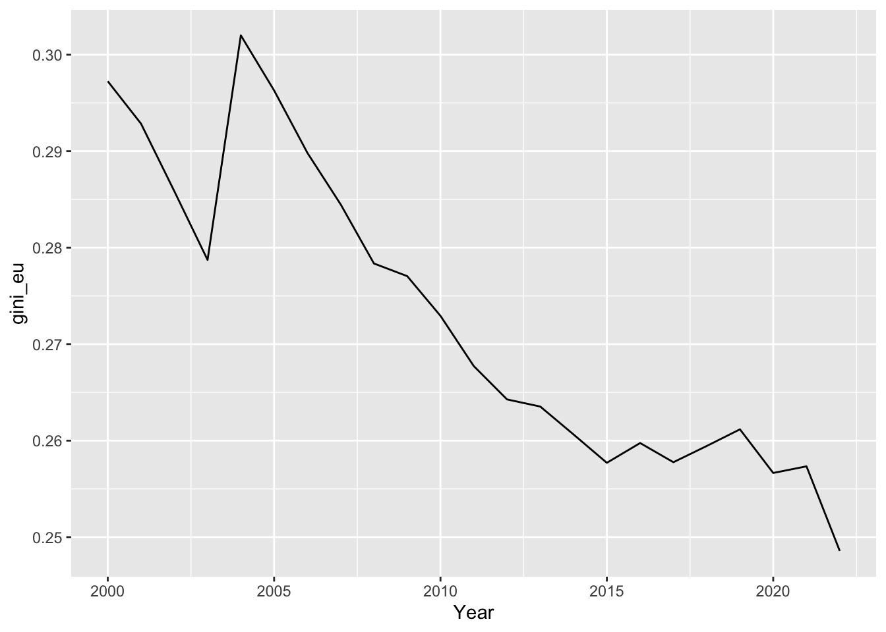
Basert på linjeplottet ser det ut til at Gini-koeffisienten for NUTS3-regioner i EU har hatt en svakt fallende trend over tid, særlig fra midten av 2000-tallet og frem mot de siste årene. Dette indikerer at ulikheten i verdiskaping mellom regioner har blitt redusert, om enn gradvis.
Dette kan tolkes som at EUs struktur- og kohesjonsfond, som i stor grad retter seg mot mindre utviklede NUTS2-regioner, kan ha hatt en viss utjevnende effekt. At nedgangen er relativt moderat tyder samtidig på at slike tiltak virker langsomt, og at regionale forskjeller i verdiskaping er seiglivede.
Samlet sett gir utviklingen støtte til at tiltakene kan bidra til økt regional konvergens, men uten å eliminere regionale forskjeller fullstendig.
eu_data_nested <- gini_n3_nest |>
left_join(gini_NUTS2_nest, by = c("nc_name", "nc")) |>
left_join(gini_NUTS1_nest, by = c("nc_name", "nc")) |>
left_join(gini_NUTSc_nest, by = c("nc_name", "nc"))# Sjekker at det ser riktig ut
glimpse(eu_data_nested)Rows: 29
Columns: 6
$ nc <chr> "AL", "AT", "BE", "BG", "CY", "CZ", "DE", "DK", "EE", "EL",…
$ nc_name <chr> "Albania", "Østerrike", "Belgia", "Bulgaria", "Kypros", "Ts…
$ NUTS3_data <list> [<tbl_df[168 x 7]>], [<tbl_df[805 x 7]>], [<tbl_df[880 x 7…
$ NUTS2_data <list> [<tbl_df[42 x 8]>], [<tbl_df[207 x 8]>], [<tbl_df[220 x 8]…
$ NUTS1_data <list> [<tbl_df[14 x 7]>], [<tbl_df[69 x 7]>], [<tbl_df[60 x 7]>]…
$ NUTSc_data <list> [<tbl_df[14 x 6]>], [<tbl_df[23 x 6]>], [<tbl_df[20 x 6]>]…names(eu_data_nested)[1] "nc" "nc_name" "NUTS3_data" "NUTS2_data" "NUTS1_data"
[6] "NUTSc_data"gini_nc |>
ggplot(aes(x = time, y = gini_nc, color = nc_name, group = nc_name)) +
geom_line() +
labs(x = "time", y = "gini_nc")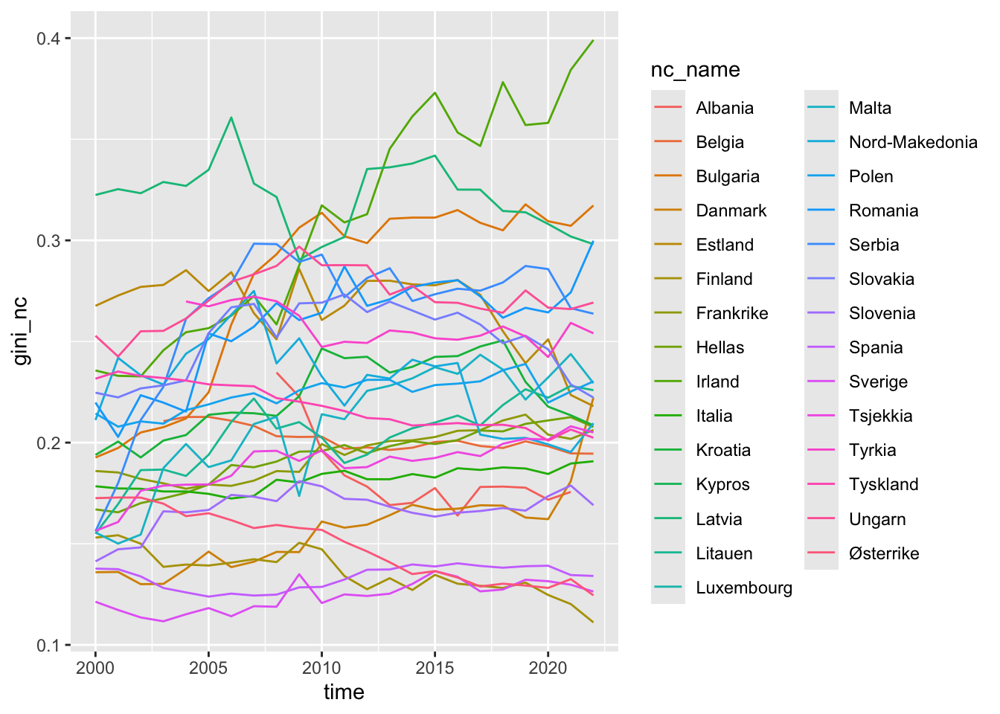
gini_2022 <- gini_nc |>
filter(time == 2022) |>
select(nc_name, gini_nc) |>
arrange(desc(gini_nc))gini_2022# A tibble: 28 × 2
nc_name gini_nc
<chr> <dbl>
1 Irland 0.399
2 Bulgaria 0.317
3 Romania 0.300
4 Latvia 0.298
5 Ungarn 0.269
6 Serbia 0.264
7 Tyrkia 0.254
8 Polen 0.230
9 Malta 0.229
10 Litauen 0.226
# ℹ 18 more rowsgini_nc |>
filter(time == 2022) |>
select(nc_name, gini_nc) |>
arrange(desc(gini_nc)) |>
kable(digits = 7) |>
kable_styling(full_width = FALSE)| nc_name | gini_nc |
|---|---|
| Irland | 0.3990713 |
| Bulgaria | 0.3172612 |
| Romania | 0.2998082 |
| Latvia | 0.2981280 |
| Ungarn | 0.2692496 |
| Serbia | 0.2637424 |
| Tyrkia | 0.2540632 |
| Polen | 0.2302756 |
| Malta | 0.2294089 |
| Litauen | 0.2259366 |
| Slovakia | 0.2222795 |
| Danmark | 0.2222566 |
| Estland | 0.2180376 |
| Nord-Makedonia | 0.2095793 |
| Kroatia | 0.2085360 |
| Hellas | 0.2077325 |
| Frankrike | 0.2062529 |
| Tsjekkia | 0.2050454 |
| Tyskland | 0.2024255 |
| Belgia | 0.1945446 |
| Italia | 0.1907755 |
| Slovenia | 0.1690681 |
| Spania | 0.1340889 |
| Sverige | 0.1263810 |
| Østerrike | 0.1244962 |
| Finland | 0.1111034 |
| Kypros | NaN |
| Luxembourg | NaN |
# ag; samme gjort i flextable
gini_nc |>
filter(time == 2022) |>
select(nc_name, gini_nc) |>
arrange(desc(gini_nc)) |>
flextable() |>
line_spacing(space = 0.5) |>
colformat_double(digits = 5) |>
autofit()nc_name | gini_nc |
|---|---|
Irland | 0.39907 |
Bulgaria | 0.31726 |
Romania | 0.29981 |
Latvia | 0.29813 |
Ungarn | 0.26925 |
Serbia | 0.26374 |
Tyrkia | 0.25406 |
Polen | 0.23028 |
Malta | 0.22941 |
Litauen | 0.22594 |
Slovakia | 0.22228 |
Danmark | 0.22226 |
Estland | 0.21804 |
Nord-Makedonia | 0.20958 |
Kroatia | 0.20854 |
Hellas | 0.20773 |
Frankrike | 0.20625 |
Tsjekkia | 0.20505 |
Tyskland | 0.20243 |
Belgia | 0.19454 |
Italia | 0.19078 |
Slovenia | 0.16907 |
Spania | 0.13409 |
Sverige | 0.12638 |
Østerrike | 0.12450 |
Finland | 0.11110 |
Kypros | |
Luxembourg |
# ag: same gini_first_last but now without warnings
gini_first_last <- gini_nc |>
# remove those with gini_nc = NaN
filter(!is.nan(gini_nc)) |>
arrange(nc_name, time) |>
group_by(nc_name) |>
summarise(
first_year = min(time[!is.na(gini_nc)]),
gini_first = gini_nc[match(first_year, time)],
gini_2022 = gini_nc[time == 2022][1],
.groups = "drop"
) |>
filter(!is.na(gini_first), !is.na(gini_2022)) |>
mutate(
group = if_else(
gini_2022 < gini_first,
"Lavere regional ulikhet i 2022",
"Høyere regional ulikhet i 2022"
)
)# Gruppere
countries_lower <- gini_first_last |> filter(group == "Lavere regional ulikhet i 2022") |> pull(nc_name)
countries_higher <- gini_first_last |> filter(group == "Høyere regional ulikhet i 2022") |> pull(nc_name)# Plot 1
gini_nc |>
filter(nc_name %in% countries_lower) |>
ggplot(aes(x = time, y = gini_nc, group = nc_name, colour = nc_name)) +
geom_line() +
labs(
title = "Land med lavere regional ulikhet i 2022 enn første år vi har data for",
x = "Year",
y = "gini_nc"
) +
theme_gray()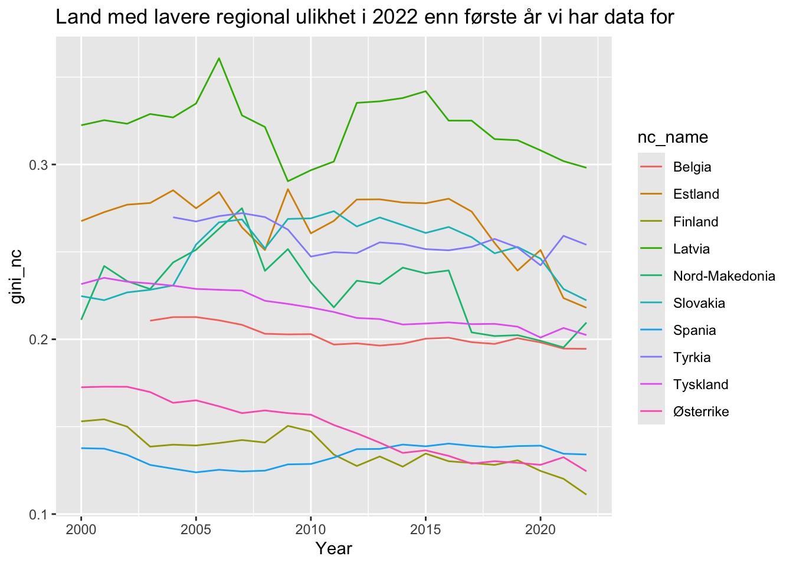
# Plot 2
gini_nc |>
filter(nc_name %in% countries_higher) |>
ggplot(aes(x = time, y = gini_nc, group = nc_name, colour = nc_name)) +
geom_line() +
labs(
title = "Land med høyere regional ulikhet i 2022 enn første år vi har data for",
x = "Year",
y = "gini_nc"
) +
theme_gray()
gini_n2 |>
filter(nc == "IE") |>
ggplot(aes(x = time, y = gini_n2, group = n2, colour = n2)) +
geom_line() +
labs(x = "Year", y = "gini_n2") +
theme_gray()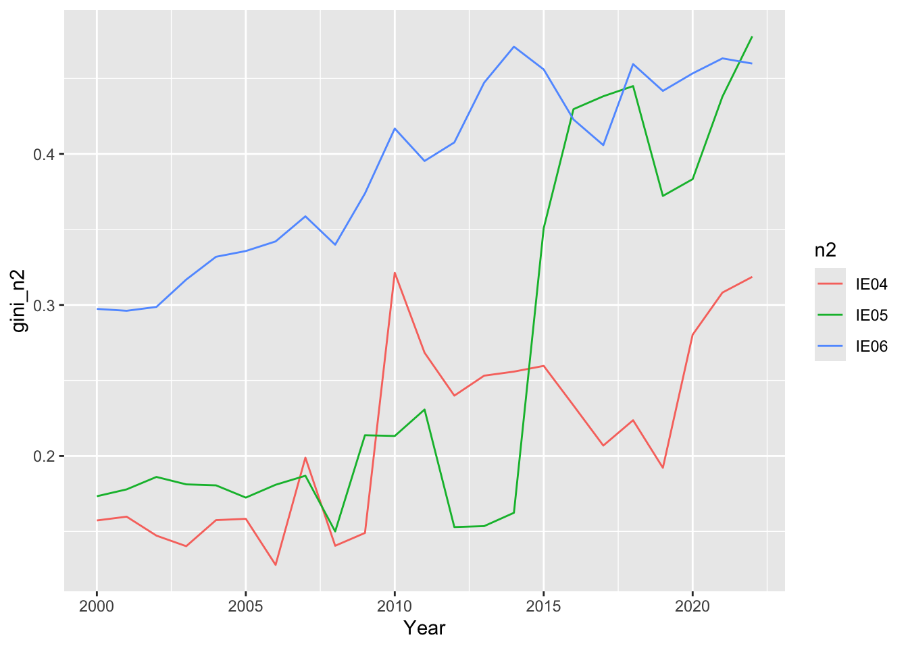
gini_n2 |>
filter(nc == "ES") |>
ggplot(aes(x = time, y = gini_n2, group = n2, colour = n2)) +
geom_line() +
labs(x = "Year", y = "gini_n2") +
theme_gray() +
theme(legend.position = "bottom")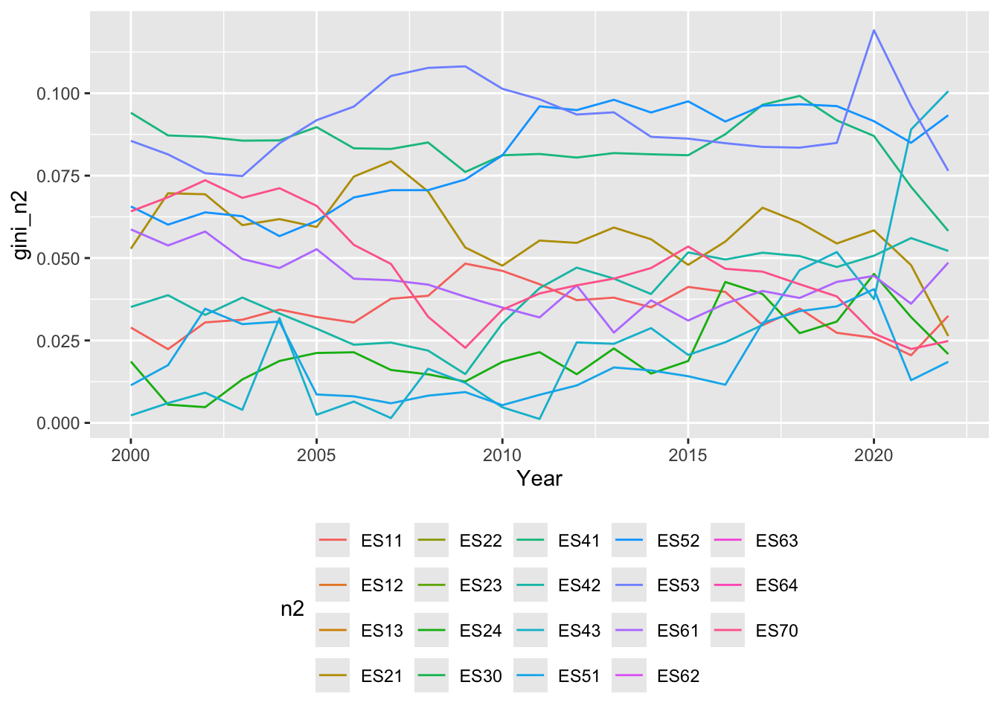
gini_n1 |>
filter(nc == "ES") |>
ggplot(aes(x = time, y = gini_n1, group = n1, colour = n1)) +
geom_line() +
labs(x = "Year", y = "gini_n1") +
theme_gray() +
theme(legend.position = "bottom")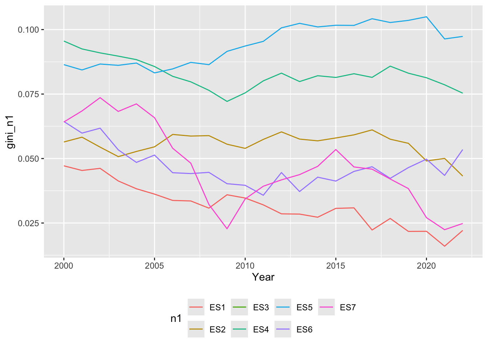
Basert på linjeplottet ser vi at enkelte NUTS1-regioner i Spania har hatt en tydelig nedgang i Gini-koeffisienten over tid, noe som indikerer økt regional utjevning. Disse regionene kjennetegnes av en relativt stabil eller fallende ulikhet gjennom perioden, særlig etter finanskrisen rundt 2008–2010. En mulig forklaring kan være at regionene består av færre og mer like NUTS3-regioner, eller at økonomisk vekst og strukturendringer har kommet flere områder innen regionen til gode. I tillegg kan nasjonal og regional politikk, samt overføringer og investeringer, ha bidratt til å redusere interne forskjeller. Samtidig ser vi at andre NUTS1-regioner har hatt mer stabil eller økende ulikhet, noe som tyder på at utviklingen ikke er entydig og varierer betydelig mellom regionene.
gini_n2 |>
filter(nc == "DE") |>
ggplot(aes(x = time, y = gini_n2, group = n2)) +
geom_line(colour = "black", alpha = 0.7) +
labs(
x = "Year",
y = "gini_n2"
) +
theme_gray() +
theme(legend.position = "none")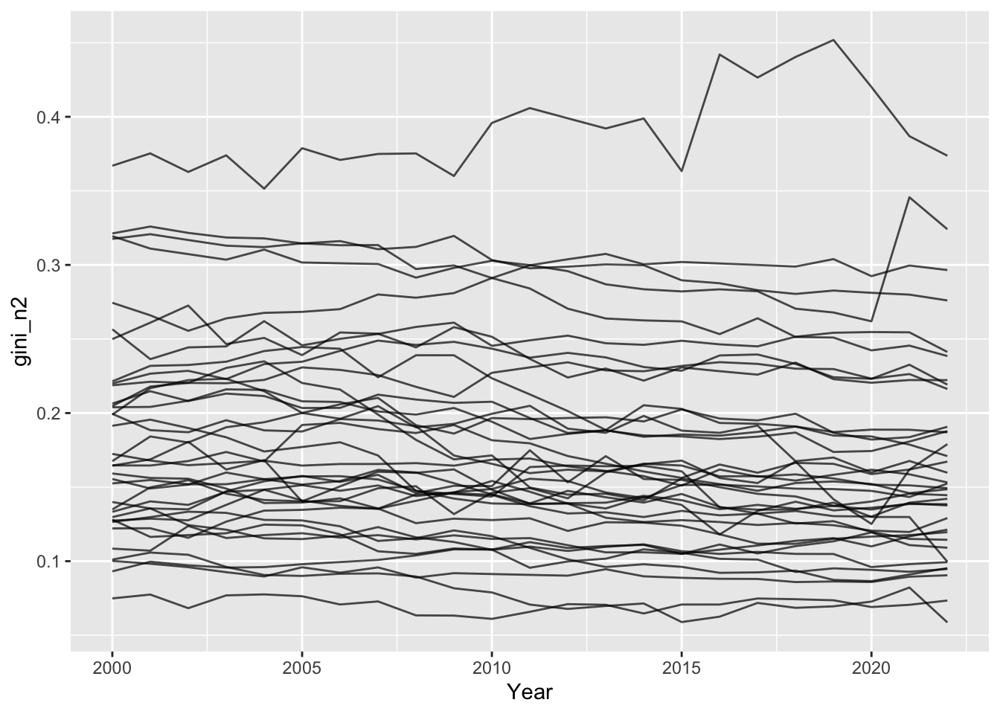
Vi ser at Gini-koeffisientene varierer betydelig mellom NUTS2-regionene i Tyskland, noe som indikerer store regionale forskjeller i hvordan verdiskapingen er fordelt internt i regionene. Regioner med særlig høye Gini-verdier tyder på at verdiskapingen er konsentrert i noen få NUTS3-områder, ofte knyttet til store byregioner og økonomiske sentra. Dette kan for eksempel være regioner som inkluderer storbyer med høy produktivitet og sterke næringsklynger, kombinert med omkringliggende områder med lavere økonomisk aktivitet. Regioner med lavere Gini-verdier fremstår derimot mer homogene, der verdiskapingen er jevnere fordelt mellom underregionene. Dette peker på at de største regionale ulikhetene i Tyskland i stor grad er knyttet til urbanisering og konsentrasjon av økonomisk aktivitet i enkelte deler av landet.
gini_n1 |>
filter(nc == "DE") |>
ggplot(aes(x = time, y = gini_n1, group = n1, colour = n1)) +
geom_line() +
labs(x = "Year", y = "gini_n1") +
theme_gray() +
theme(legend.position = "right")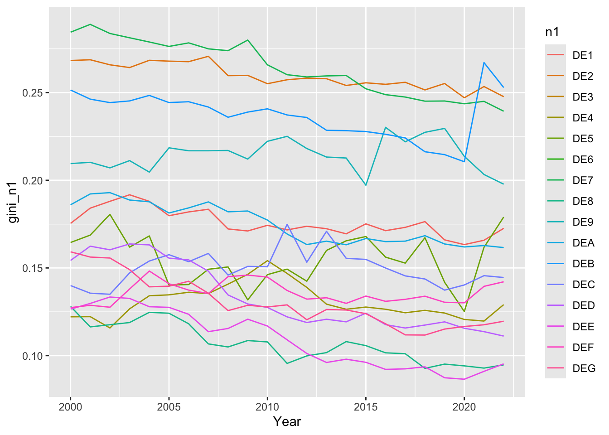
eu_data_nested |>
unnest(NUTS1_data) |>
filter(nc_name == "Tyskland") |>
filter(time == "2022") |>
select(n1, gini_n1, num_reg_n1) |>
arrange(desc(gini_n1)) |>
flextable() |>
line_spacing(space = 0.3) |>
colformat_double(j = 2, digits = 4)n1 | gini_n1 | num_reg_n1 |
|---|---|---|
DEB | 0.2529 | 36 |
DE2 | 0.2477 | 96 |
DE7 | 0.2394 | 26 |
DE9 | 0.1978 | 45 |
DE5 | 0.1790 | 2 |
DE1 | 0.1726 | 44 |
DEA | 0.1616 | 53 |
DEC | 0.1445 | 6 |
DEF | 0.1421 | 15 |
DE4 | 0.1291 | 18 |
DEG | 0.1196 | 22 |
DED | 0.1111 | 13 |
DEE | 0.0953 | 14 |
DE8 | 0.0947 | 8 |
DE3 | 1 | |
DE6 | 1 |
gini_n1 |>
filter(nc == "FR") |>
ggplot(aes(x = time, y = gini_n1, group = n1, colour = n1)) +
geom_line() +
labs(x = "Year", y = "gini_n1") +
theme_gray() +
theme(legend.position = "right")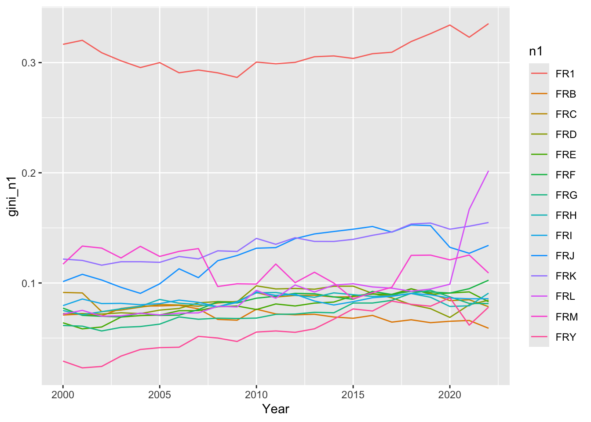
gini_n1 |>
filter(nc == "FR", time == 2022) |>
arrange(desc(gini_n1)) |>
slice_head(n = 6) |>
select(n1, gini_n1) |>
flextable() |>
flextable::colformat_double(j = "gini_n1", digits = 4) |>
flextable::set_header_labels(
n1 = "NUTS1-sone",
gini_n1 = "Gini (2022)"
) |>
flextable::theme_booktabs() |>
flextable::autofit()NUTS1-sone | Gini (2022) |
|---|---|
FR1 | 0.3354 |
FRL | 0.2018 |
FRK | 0.1549 |
FRJ | 0.1341 |
FRM | 0.1091 |
FRF | 0.1025 |
Tabellen viser at FR1 (Île-de-France) har suverent høyest Gini-koeffisient blant NUTS1-regionene i Frankrike i 2022. Regionen omfatter Paris og omkringliggende områder, og den høye Gini-verdien indikerer store regionale forskjeller i økonomisk aktivitet. Dette er konsistent med at hovedstadsregioner ofte kombinerer svært produktive sentra med områder som henger etter økonomisk.
"gdp_pc_n3" %in% names(eu_data)[1] TRUEfr1_n3 <- eu_data |>
filter(nc == "FR", n1 == "FR1") |>
select(time, n3, gdp_pc_n3) |>
filter(!is.na(gdp_pc_n3))# ag: blir litt lang. Vil anbefale å lage f.eks for tre år
fr1_n3 |>
filter(time %in% c(2000, 2011, 2022)) |>
mutate(
time = as.character(time)
) |>
flextable() |>
line_spacing(space = 0.2) |>
autofit()time | n3 | gdp_pc_n3 |
|---|---|---|
2000 | FR101 | 64,522.23 |
2011 | FR101 | 78,904.40 |
2022 | FR101 | 113,522.65 |
2000 | FR102 | 18,181.52 |
2011 | FR102 | 24,819.64 |
2022 | FR102 | 29,967.05 |
2000 | FR103 | 25,976.31 |
2011 | FR103 | 33,710.53 |
2022 | FR103 | 36,897.43 |
2000 | FR104 | 23,437.47 |
2011 | FR104 | 30,727.68 |
2022 | FR104 | 36,840.11 |
2000 | FR105 | 59,041.77 |
2011 | FR105 | 82,782.45 |
2022 | FR105 | 101,546.46 |
2000 | FR106 | 21,732.37 |
2011 | FR106 | 29,799.38 |
2022 | FR106 | 37,017.33 |
2000 | FR107 | 21,672.27 |
2011 | FR107 | 31,203.48 |
2022 | FR107 | 38,624.91 |
2000 | FR108 | 19,823.80 |
2011 | FR108 | 26,935.23 |
2022 | FR108 | 28,995.33 |
ggplot(fr1_n3, aes(x = time, y = gdp_pc_n3, group = n3, colour = n3)) +
geom_line(alpha = 0.7) +
labs(x = "Year", y = "gdp_pc_n3") +
theme_gray()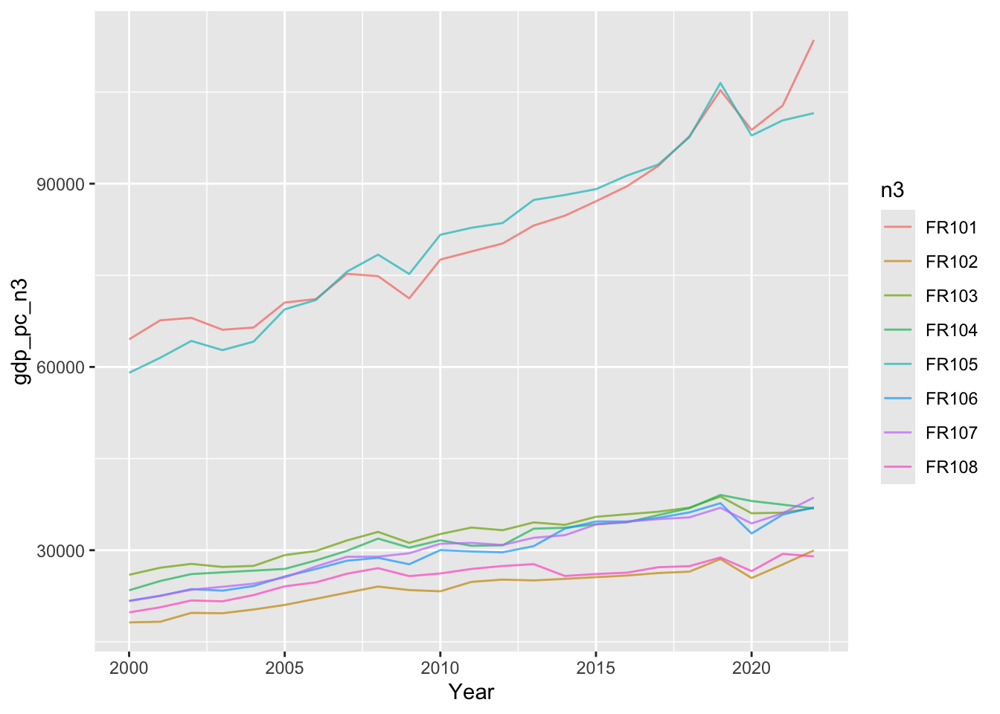
fr1_table_2022 <- fr1_n3 |>
filter(time == 2022) |>
distinct(n3, gdp_pc_n3) |>
arrange(desc(gdp_pc_n3))
fr1_table_2022 |>
flextable() |>
flextable::set_header_labels(
n3 = "NUTS3-sone",
gdp_pc_n3 = "BNP per innbygger (2022)"
) |>
flextable::colformat_double(j = "gdp_pc_n3", digits = 0, big.mark = " ") |>
flextable::theme_booktabs() |>
flextable::autofit()NUTS3-sone | BNP per innbygger (2022) |
|---|---|
FR101 | 113 523 |
FR105 | 101 546 |
FR107 | 38 625 |
FR106 | 37 017 |
FR103 | 36 897 |
FR104 | 36 840 |
FR102 | 29 967 |
FR108 | 28 995 |
fr1_n3 <- eu_data |>
filter(nc == "FR", n1 == "FR1") |>
select(time, n3, gdp_pc_n3) |>
filter(!is.na(gdp_pc_n3))
top6_n3 <- fr1_n3 |>
filter(time == 2022) |>
arrange(desc(gdp_pc_n3)) |>
slice_head(n = 6) |>
pull(n3)
fr1_n3_top6 <- fr1_n3 |>
filter(n3 %in% top6_n3)
ggplot(fr1_n3_top6, aes(x = time, y = gdp_pc_n3, group = n3, colour = n3)) +
geom_line(alpha = 0.8) +
labs(x = "Year", y = "gdp_pc_n3") +
theme_gray()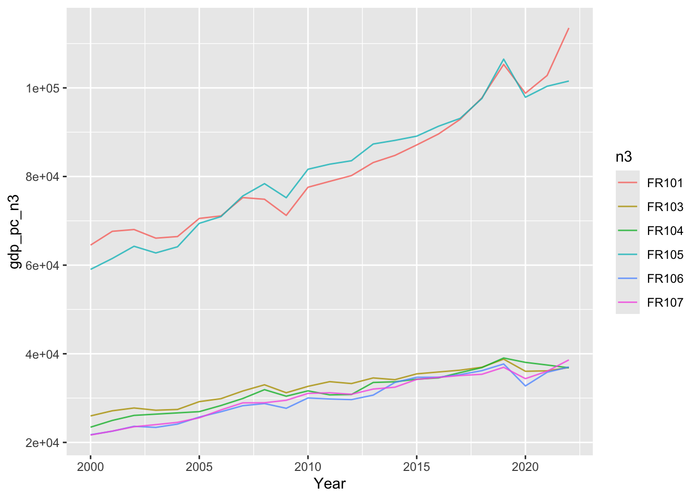
fr1_table_2022 <- fr1_n3_top6 |>
filter(time == 2022) |>
arrange(desc(gdp_pc_n3)) |>
select(n3, gdp_pc_n3)
knitr::kable(fr1_table_2022,
digits = 0,
caption = "GDP per capita (gdp_pc_n3) for topp 6 NUTS3-soner i FR1 (2022)")| n3 | gdp_pc_n3 |
|---|---|
| FR101 | 113523 |
| FR105 | 101546 |
| FR107 | 38625 |
| FR106 | 37017 |
| FR103 | 36897 |
| FR104 | 36840 |
fr1_table_2022 <- fr1_n3 |>
filter(time == 2022, n3 %in% top6_n3) |>
distinct(n3, gdp_pc_n3) |>
arrange(desc(gdp_pc_n3))
fr1_table_2022 |>
flextable() |>
flextable::set_header_labels(
n3 = "NUTS3-sone",
gdp_pc_n3 = "BNP per innbygger (2022)"
) |>
flextable::colformat_double(j = "gdp_pc_n3", digits = 0, big.mark = " ") |>
flextable::theme_booktabs() |>
flextable::autofit()NUTS3-sone | BNP per innbygger (2022) |
|---|---|
FR101 | 113 523 |
FR105 | 101 546 |
FR107 | 38 625 |
FR106 | 37 017 |
FR103 | 36 897 |
FR104 | 36 840 |
Ut fra plottet og tabellen ser vi at FR1 har svært store interne forskjeller i verdiskaping (BNP per innbygger) mellom NUTS3-sonene. To av sonene (f.eks. FR101 og FR105 i vår tabell) ligger ekstremt høyt sammenlignet med resten, mens flere andre soner ligger betydelig lavere og følger en helt annen bane. Dette tyder på at økonomisk aktivitet er svært konsentrert i enkelte deler av regionen, mens andre deler har et lavere nivå. Når enkelte områder drar kraftig fra i verdiskaping, øker spredningen innen regionen, og det er i tråd med at FR1 får en høy Gini-koeffisient. Med andre ord: Den høye Gini-en i FR1 ser ut til å henge sammen med at regionen inneholder både “topper” (svært høy verdiskaping) og “bunn” (langt lavere), altså stor regional ulikhet internt.
n3_data <- eu_data_nested |>
unnest(NUTS3_data) |>
select(nc_name, n2, n3, time, gdp_pc_n3)n2_data <- eu_data_nested |>
unnest(NUTS2_data) |>
select(nc_name, n2, time, gini_n2)NUTS2_diff <- n3_data |>
left_join(n2_data, by = join_by(nc_name, n2, time)) |>
mutate(
diff_gdp_per_capita = c(NA, 100 * diff(gdp_pc_n3)),
diff_gini_nuts2 = c(NA, 100 * diff(gini_n2))
) %>%
filter(complete.cases(.)) |>
group_by(nc_name, n2) |>
nest(.key = "NUTS2_diff")unnest(NUTS2_diff, NUTS2_diff) |>
ungroup() |>
filter(!is.nan(gini_n2)) |>
select(n2) |>
distinct() |>
nrow()[1] 218NUTS2_diff <- NUTS2_diff |>
group_by(nc_name, n2) |>
mutate(
modell = map(
.x = NUTS2_diff,
.f = function(a_df) lm('diff_gini_nuts2 ~ diff_gdp_per_capita', data = a_df)
)
)mod_coeff <- NUTS2_diff |>
mutate(
coeff = map(
modell,
~ coef(.x)
)
)mod_coeff <- mod_coeff |>
select(nc_name, n2, coeff) |>
mutate(
coeff = map(
coeff,
~ tibble(
term = names(.x),
estimate = as.numeric(.x)
)
)
) |>
unnest(coeff)mod_coeff <- mod_coeff |>
filter(term == "diff_gdp_per_capita")NUTS2_diff <- NUTS2_diff |>
group_by(nc_name, n2) |>
mutate(
mod_sum = bind_rows(
map(
.x = modell,
.f = glance
)
)
)library(purrr)
library(dplyr)
NUTS2_diff <- NUTS2_diff |>
mutate(
mod_coeff = map(modell, coef),
intercept = map_dbl(mod_coeff, ~ .x["(Intercept)"])
)NUTS2_diff |>
arrange(desc(mod_sum$r.squared)) |>
head(n = 3)# A tibble: 3 × 7
# Groups: nc_name, n2 [3]
nc_name n2 NUTS2_diff modell mod_sum$r.squared mod_coeff intercept
<chr> <chr> <list> <list> <dbl> <list> <dbl>
1 Polen PL82 <tibble [92 × 6]> <lm> 0.772 <dbl [2]> -0.0364
2 Tyskland DED5 <tibble [69 × 6]> <lm> 0.701 <dbl [2]> 0.00344
3 Belgia BE22 <tibble [60 × 6]> <lm> 0.692 <dbl [2]> 0.129
# ℹ 11 more variables: mod_sum$adj.r.squared <dbl>, $sigma <dbl>,
# $statistic <dbl>, $p.value <dbl>, $df <dbl>, $logLik <dbl>, $AIC <dbl>,
# $BIC <dbl>, $deviance <dbl>, $df.residual <int>, $nobs <int>NUTS2_diff |>
arrange(mod_sum$r.squared) |>
head(n = 3)# A tibble: 3 × 7
# Groups: nc_name, n2 [3]
nc_name n2 NUTS2_diff modell mod_sum$r.squared mod_coeff intercept
<chr> <chr> <list> <list> <dbl> <list> <dbl>
1 Italia ITH3 <tibble [160 × 6]> <lm> 0.000102 <dbl [2]> 0.00374
2 Tyskland DE26 <tibble [276 × 6]> <lm> 0.000150 <dbl [2]> -0.00903
3 Tyskland DE22 <tibble [276 × 6]> <lm> 0.000491 <dbl [2]> -0.0500
# ℹ 11 more variables: mod_sum$adj.r.squared <dbl>, $sigma <dbl>,
# $statistic <dbl>, $p.value <dbl>, $df <dbl>, $logLik <dbl>, $AIC <dbl>,
# $BIC <dbl>, $deviance <dbl>, $df.residual <int>, $nobs <int>mod_coeff_diff <- mod_coeff |>
filter(term == "diff_gdp_per_capita")nuts1_beta <- mod_coeff_diff |>
group_by(nc_name) |>
summarise(
mean_beta = mean(estimate, na.rm = TRUE)
) |>
arrange(desc(mean_beta))nuts1_beta |> slice(1)# A tibble: 1 × 2
nc_name mean_beta
<chr> <dbl>
1 Bulgaria 0.00000566nuts1_beta |> slice(n())# A tibble: 1 × 2
nc_name mean_beta
<chr> <dbl>
1 Albania -0.00000600Basert på gjennomsnittlige koeffisienter for diff_gdp_per_capita på NUTS2-nivå, aggregert til NUTS1-soner, har Bulgaria den høyeste koeffisienten. Dette indikerer at endringer i BNP per innbygger har sterkest sammenheng med den avhengige variabelen i Bulgaria sammenlignet med de øvrige NUTS1-sonene i utvalget.
NUTS2_diff |>
ungroup() |>
summarise(
n_significant = sum(mod_sum$p.value < 0.05, na.rm = TRUE),
n_total = n()
)# A tibble: 1 × 2
n_significant n_total
<int> <int>
1 162 218NUTS2_diff |>
ungroup() |>
summarise(n_significant = sum(mod_sum$p.value < 0.05, na.rm = TRUE)) |>
pull(n_significant)[1] 162NUTS2_diff |>
tidyr::unnest(cols = c(NUTS2_diff)) |>
names() [1] "nc_name" "n2" "n3"
[4] "time" "gdp_pc_n3" "gini_n2"
[7] "diff_gdp_per_capita" "diff_gini_nuts2" "modell"
[10] "mod_sum" "mod_coeff" "intercept" beta_df <- mod_coeff |>
filter(term == "diff_gdp_per_capita")
m <- mean(beta_df$estimate, na.rm = TRUE)
ggplot(beta_df, aes(x = estimate)) +
geom_density(color = "black") +
geom_vline(xintercept = m, linetype = "dashed") +
scale_x_continuous(
breaks = c(-2e-05, -1e-05, 0, 1e-05),
labels = scales::label_scientific()
) +
scale_y_continuous(
breaks = c(0, 50000, 100000, 150000),
limits = c(0, 170000)
) +
labs(x = "diff_gdp_per_capita", y = "density") 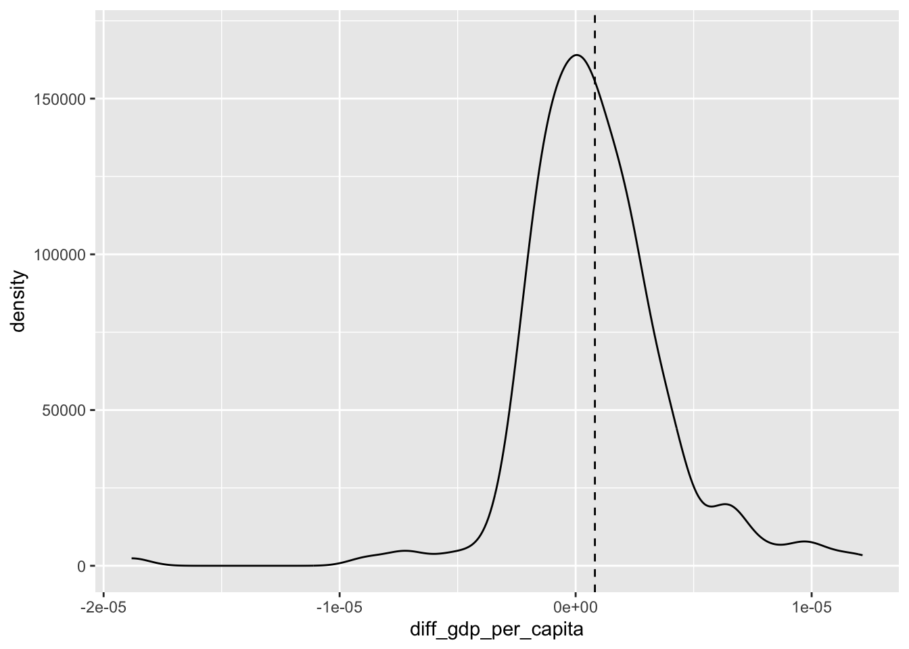
res_41 <- mod_coeff |>
ungroup() |>
filter(term == "diff_gdp_per_capita") |>
summarise(
n_positive = sum(estimate > 0, na.rm = TRUE),
n_total = n()
)
res_41# A tibble: 1 × 2
n_positive n_total
<int> <int>
1 132 218res_42 <- mod_coeff |>
ungroup() |>
filter(term == "diff_gdp_per_capita") |>
summarise(
mean_estimate = mean(estimate, na.rm = TRUE),
median_estimate = median(estimate, na.rm = TRUE)
)
paste0("Mean: ", format(res_42$mean_estimate, scientific = TRUE, digits = 1))[1] "Mean: 8e-07"paste0("Median: ", format(res_42$median_estimate, scientific = TRUE, digits = 1))[1] "Median: 5e-07"x <- mod_coeff |>
ungroup() |>
filter(term == "diff_gdp_per_capita") |>
pull(estimate)t.test(
x,
mu = 0,
alternative = "greater"
)
One Sample t-test
data: x
t = 3.7658, df = 217, p-value = 0.0001069
alternative hypothesis: true mean is greater than 0
95 percent confidence interval:
4.583272e-07 Inf
sample estimates:
mean of x
8.16482e-07 library(dplyr)
library(tidyr)
library(plm)
panel_df <- NUTS2_diff %>%
select(nc_name, n2, NUTS2_diff) %>% # <- viktig: tar bare med den nested dataen
unnest(cols = c(NUTS2_diff)) %>%
mutate(
n3 = as.character(n3),
time = as.integer(time)
)
p_mod <- plm(
diff_gini_nuts2 ~ diff_gdp_per_capita,
data = panel_df,
index = c("n3", "time"),
model = "within"
)summary(p_mod)Oneway (individual) effect Within Model
Call:
plm(formula = diff_gini_nuts2 ~ diff_gdp_per_capita, data = panel_df,
model = "within", index = c("n3", "time"))
Unbalanced Panel: n = 1186, T = 13-23, N = 26700
Residuals:
Min. 1st Qu. Median 3rd Qu. Max.
-37.335219 -0.559292 -0.035798 0.505712 27.300139
Coefficients:
Estimate Std. Error t-value Pr(>|t|)
diff_gdp_per_capita 3.9320e-07 2.4694e-08 15.923 < 2.2e-16 ***
---
Signif. codes: 0 '***' 0.001 '**' 0.01 '*' 0.05 '.' 0.1 ' ' 1
Total Sum of Squares: 78060
Residual Sum of Squares: 77291
R-Squared: 0.0098397
Adj. R-Squared: -0.036189
F-statistic: 253.536 on 1 and 25513 DF, p-value: < 2.22e-16Resultatet fra panelregresjonen (within-modell med individuelle effekter) viser at diff_gdp_per_capita har en positiv og statistisk signifikant effekt på diff_gini_nuts2. Koeffisienten er positiv, men svært liten i størrelse, og er signifikant på 1 %-nivå (p < 0.001). Dette indikerer at økning i BNP per innbygger er assosiert med en økning i Gini-koeffisienten innen regioner over tid. Forklaringskraften er imidlertid lav (R² ≈ 0.01), noe som tyder på at modellen forklarer en begrenset del av variasjonen i ulikhet.
I denne chunk-en brukes summary() på panelmodellen p_mod med en robust varians–kovariansmatrise, spesifisert gjennom vcovHC() med metoden “white2”. Dette innebærer at standardfeilene beregnes på en måte som er robust mot heteroskedastisitet og mulig korrelasjon i residualene innen panelenhetene. Sammenlignet med en ordinær summary(p_mod) er koeffisientestimatene identiske, siden selve regresjonsmodellen ikke endres. Forskjellen ligger i standardfeilene, som i denne alternative metoden er større enn i den ordinære summary()-utskriften. Dette fører til noe lavere t-verdier, men koeffisienten for diff_gdp_per_capita forblir fortsatt sterkt statistisk signifikant. Resultatet viser dermed at konklusjonen om en positiv og signifikant sammenheng mellom endringer i BNP per innbygger og endringer i Gini-koeffisienten er robust, også når vi tar hensyn til mulig heteroskedastisitet i dataene. Forklaringskraften (R²) er uendret og fortsatt lav, noe som indikerer at modellen forklarer en begrenset andel av variasjonen i ulikhet.